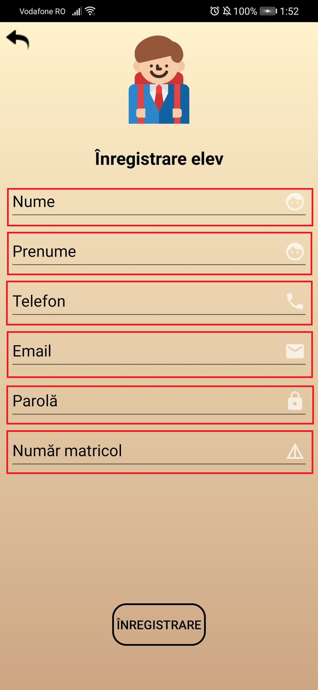

Create Account
If the user does not already have an existing account, they can create one on the Register page. This page contains three possible types of profiles: Student, Parent and Teacher. Select the type of profile you want and continue with the account creation.

Student Profile
This page contains the following fields: name, First, Telephone, Email, Password, and Matrix Number. These shall be completed with the related personal data.

When you press the Registration button the account is created and returns to the LOG IN page to sign in.

Parent Profile
This page contains the following fields: Name, Firstname, Telephone, Email, Password, and Student MatrixNumber. They shall be completed with the related personal data.

When you press the Registration button the account is created and returns to the LOG IN page to sign in.

Teacher Profile
This page contains the following fields: Name, First, Telephone, Email, Password, and Matter. These shall be completed with the related personal data.

There is also the Teach class field in which the user ticks the classes to which he teaches.

When you press the Registration button the account is created and returns to the LOG IN page to sign in.